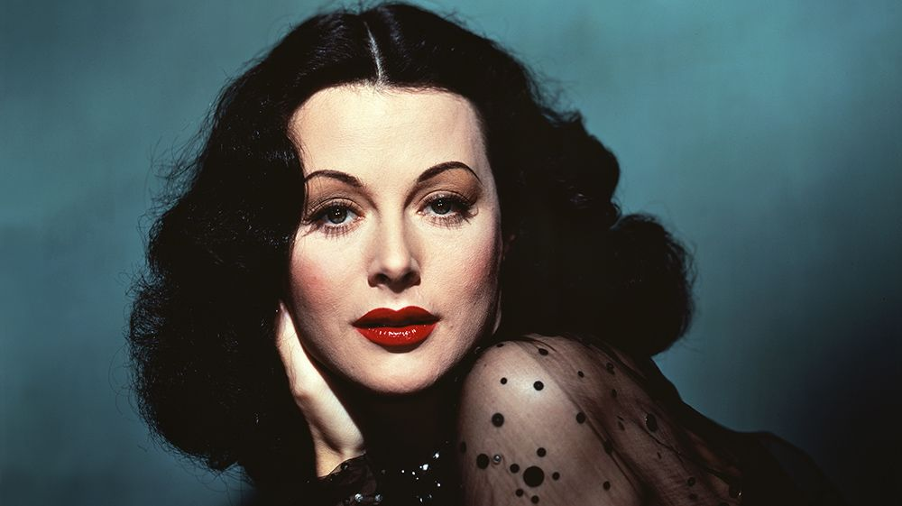

Hedy Lamarr
"La plus belle femme du Monde"

1815 - 1852 (France culture)
Qui est Hedy?
Hedwig Kiesler, dite Hedy Lamarr, est une actrice, productrice de cinéma et inventrice autrichienne naturalisée américaine, née le 9 novembre 1914 à Vienne (à l’époque en Autriche-Hongrie) et morte le 19 janvier 2000 à Casselberry (Floride, États-Unis). Elle a été désignée en son temps comme la « plus belle femme du monde ».
Comment à t'elle marqué l'histoire ?
Outre sa carrière au cinéma, elle a marqué l'histoire scientifique des télécommunications en inventant en collaboration avec le compositeur George Antheil, pianiste et inventeur comme elle, un moyen de coder des transmissions (étalement de spectre par saut de fréquence). Il s'agit d'un principe de transmission toujours utilisé pour le positionnement par satellites (GPS, etc.), les liaisons chiffrées militaires ou dans certaines techniques Wi-Fi.
Les différentes choses qu'elle à réaliser au cours de sa vie.
Au cours de sa carrière cinématographique, elle a joué sous la direction des plus grands réalisateurs de l'époque : King Vidor, Jack Conway, Victor Fleming, Jacques Tourneur, Marc Allégret, Cecil B. DeMille ou Clarence Brown.
Plus d'Info ?
Pour plus d'information sur Hedy Lamarr nous vous invitons à consulter ce lien Wikipédia